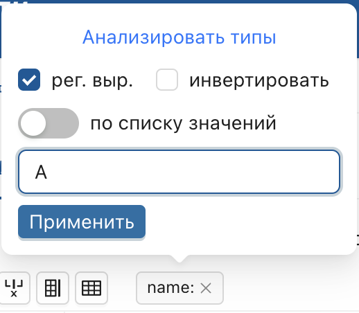
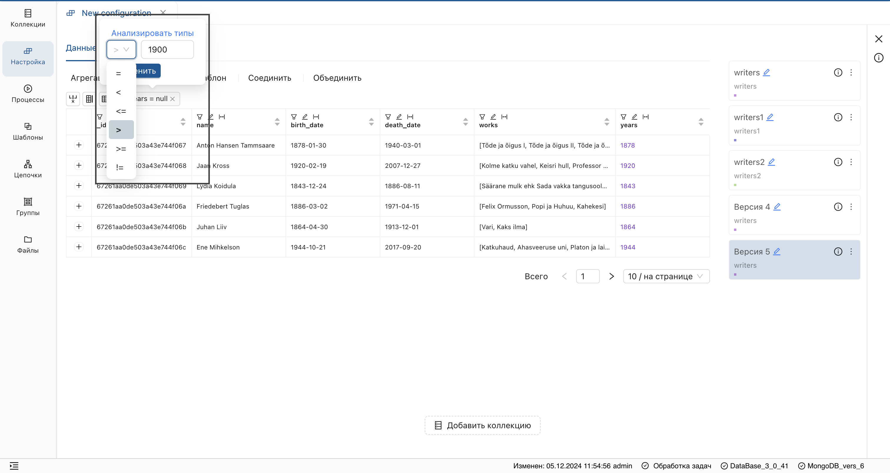
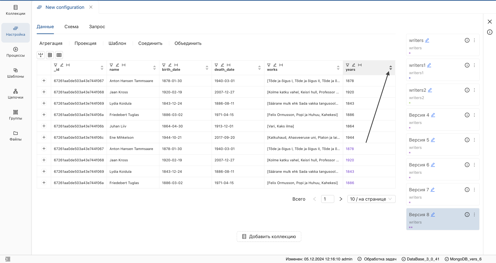

Таблица данных
Таблица отображает наборы JSON-документов. Строки представляют отдельные документы, а колонки — пары ключ-значение. Таблица содержит ряд преобразований, описанных ниже.
Перемещение полей
- Нажмите элемент "Настроить поля" над таблицей.

- Захватите нужное поле и переместите его.

- Для сохранения изменений нажмите на отобразившуюся дискету справа над таблицей.

Удаление полей
- Нажмите элемент "Настроить поля" над таблицей.
- Снимите галочки напротив полей, которые нужно удалить.

- Для сохранения изменений нажмите на отобразившуюся дискету справа над таблицей.
Добавление полей
- На странице шага настройки нажмите кнопку добавления поля, введите имя поля и подтвердите действие.

- Для сохранения изменений нажмите на отобразившуюся дискету справа над таблицей.
Данная функциональность позволяет вручную добавить поля, чтобы сформировать структуру данных.
Выгрузка полей
Если не все поля отображены, нажмите значок выгрузки полей для их отображения.
 Результат:
Результат:
Заголовки выгруженных полей добавятся на верхний уровень, а пересечения данных заполнятся типом данных null.
Выгрузка полей позволяет сформировать однородную структуру данных, например, в результате операции Объединить.
Фильтр по полю таблицы
Доступны следующие типы фильтров: строковый, числовой, по списку значений и по типу данных.
Строковый фильтр
- Нажмите на элемент фильтра в заголовке поля.

- В отобразившейся форме введите условие поиска. 
- Нажмите "Применить".
Результат:
В указанном поле отобразятся только значения, совпавшие с условием фильтра. - Для сохранения результата, нажмите на отобразившуюся дискету справа над таблицей.
Строковый фильтр также поддерживает поиск по регулярному выражению. Для этого установите отметку в чек-боксе "рег.выр.".
Числовой фильтр
- Нажмите на элемент фильтра в заголовке поля.
- В отобразившейся форме введите число и выберите оператор сравнения из списка. 
- Нажмите "Применить". Результат: В указанном поле отобразятся значения, соответствующие условию фильтра.
- Для сохранения результата, нажмите на отобразившуюся дискету справа над таблицей.
Числовой фильтр применим только к типу данных
integer(в системе отображаются контрастным цветом).
Фильтр по списку значений
- Нажмите на элемент фильтра в заголовке поля.
- Установите переключатель "по списку значений".

- В отобразившемся списке выберите нужные значения и нажмите "Применить".
Список содержит уникальные значения поля.
Фильтр по типу данных
- Нажмите на элемент фильтра в заголовке поля.
-
В отобразившейся форме нажмите «анализировать типы».
 3. Выберите необходимый тип данных и нажмите "Применить".
Результат:
3. Выберите необходимый тип данных и нажмите "Применить".
Результат:
В указанном поле отобразится только выбранный тип данных.
Переименование поля
- Нажмите на элемент "Редактировать имя" в заголовке поля.

- Введите новое имя поля и сохраните изменения.
Удаление пробелов с концов строки
- Нажмите на элемент "Удалить пробелы с концов строк" в заголовке поля.

- Для сохранения изменений нажмите на отобразившуюся дискету справа над таблицей.
Сортировка значений
Нажмите на стрелку в заголовке поля для сортировки значений по возрастанию, убыванию или алфавиту. 
Типы данных
Таблица поддерживает различные типы данных:
| Тип данных | Представление |
|---|---|
| Строковый | Стандартный цвет |
| Числовой | Контрастный цвет |
| Массив значений | Квадратные и фигурные скобки |
| Объект | Фигурные скобки |
| Массив строк | Квадратные скобки |
JSON-представление документа
Для просмотра документа в формате JSON нажмите на плюс в таблице слева от значений.

Навигация по страницам коллекции
Внизу таблицы расположена панель пагинации, на которой отображается:
- Общее количество значений Всего.
- Элементы перехода на следующую/предыдущую страницы.
- Указание номера страницы.
- Отображение количества элементов на странице.